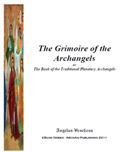
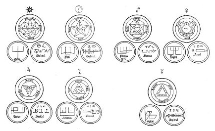

|  |
The
Grimoire of the Archangels
The Book is large, over 400 pages, but will save
you money as it covers seven of the existing Path
Books. Those of Gabriel, Samael, Raphael. Sachiel,
Anael, Cassiel and Michael. Here is an extract of
the sections covered for each Archangel (The example
here is for the Archangel Gabriel. All the other Archangels
have the same subject categories covered)
The Archangel Gabriel
Gabriel's Powers and Correspondences
Rulership or Domain
Archangels Appearance
Invoking Pentacle
Drawing the Pentacle - Waxing Moon
Drawing Pentacle - Waning Moon
The Magickal Alphabet of Gabriel
Calling Gabriel
Personal Seal of Gabriel
Gabriel's Signs
Moons Talismans and Pentacles
Archangel Gabriel's Symbol
Gabriel's Protective Amulet
The Pyramid of Gabriel
Prayers to the Archangel
|
A system of seven archangels is an old tradition originating
in Judaism. However, the earliest reference to a system
of seven archangels as a group appears to be in Enoch I
(the Book of Enoch) which is not part of the Jewish Scriptures,
where they are named as Michael, Gabriel, Raphael, Uriel,
Raguel, Zerachiel and Remiel.
In the late 5th to early 6th century , Pseudo-Dionysius
gives them as Michael, Gabriel, Raphael, Uriel, Chamuel,
Jophiel, and Zadkiel.
The earliest Christian mention is by Pope Gregory I who
lists them as Michael, Gabriel, Raphael, Uriel, Simiel [Sammael],
Orifiel, and Zachariel [Sachiel].
The Eastern Orthodoxy tradition venerates Michael, Gabriel,
Raphael, Uriel, Selaphiel, Jegudiel, and Barachiel.
Another Catholic variation lists them corresponding to the
days of the week as: Michael (Sunday), Gabriel (Monday),
Raphael (Tuesday), Uriel (Wednesday), Sealtiel (Thursday),
Jhudiel (Friday) and Barachiel (Saturday).
In the more modern angelology, different sources disagree
on the names and identities of the seven archangels. In
the Book of Enoch, Remeil is also described as one of the
leaders of the 200 Grigori, the fallen angels. Various occult
systems associate each archangel with one of the traditional
seven "luminaries" — the Sun, Moon, Mars,
Mercury, Jupiter, Venus, and Saturn — but there is
disagreement as to which archangel corresponds to which
body.
[In the Pauline Art the recognized Seven Archangels, their
planets and day are:]
Archangel Michael - The Sun - Sunday - For Full Correspondences
- Click
here
Archangel Gabriel - The Moon - Monday - For Full Correspondences
-
Click here
Archangel Samael - Mars - Tuesday - For Full Correspondences
- Click
here
Archangel Raphael - Mercury - Wednesday - For Full Correspondences
- Click
here
Archangel Sachiel - Jupiter - Thursday - For Full Correspondences
- Click
here
Archangel Anael - Venus - Friday - For Full Correspondences
- Click
here
Archangel Cassiel - Saturn - Saturday - For Full Correspondences
- Click
here
The seven archangels figure in some systems
of ritual magic, each archangel bearing a specific seal.

The Seven Seals of the Seven Archangels from
a 16th century treatise, The Complete Book of Magic Science;
the seals of the Seven Olympian spirits are also shown.
Please Note: The entries above in [ ] are
additions to the original placed by the ArchAn editor.
References:
Seven Archangels. (2009 - 2011, April 6). In Wikipedia,
The Free Encyclopedia. Retrieved 05:07, April 25, 2009 - 2011,
from: http://en.wikipedia.org/w/index.php?title=Seven_Archangels&oldid=20370308
Copyright (C) 2000,2001,2002
Free Software Foundation, Inc.
51 Franklin St, Fifth Floor, Boston, MA 02110-1301 USA
Everyone is permitted to copy and distribute verbatim copies
of this license document, but changing it is not allowed.
|